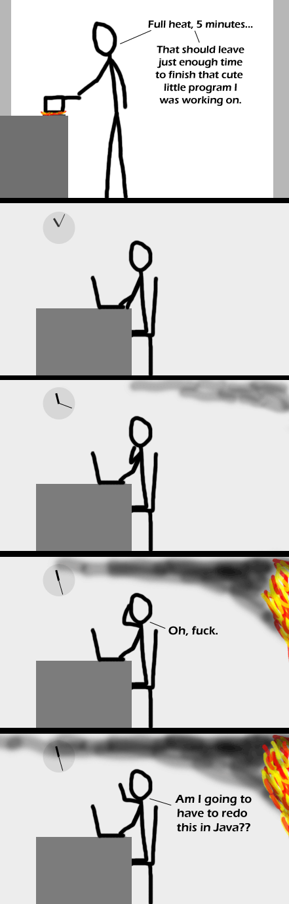

Comic JK 275
When I Feel Like It
⇤
<
?
>
⇥

⇤
<
?
>
⇥
Forum
.
RSS
.
Digg
.
Facebook
.
Reddit
.
Twitter
.
Stumbleupon
VVV This doesn't have anything to do with anything VVV I would suggest for a few mohtns write down (I put it in excel) every single thing you spend even 50 cents on. Look at it and take out every single thing that you don't have to have and things you can make less. Take out the random cup of coffee, the ice cream and cookies, the convience foods like individual pre bagged snack foods, candy bars, inpulse buys. Can you lower your cell bill by getting on a family plan with your or your hubby's parents, or do you actually need two phones for your family, can you live w/o a smart phone. Could you cancel you trash service and drive your trash for free to a landfill? See what your actual expesnses are of things that you can't survive without and can't change. Then make your decision from there. It might take sacrifice and it might mean that you never eat out and that when asked what you want for Christmas you tell them things you need instead of want, but you might just be able to work it out. I'm not saying everyone can, sometimes you just have to work. When we surprisingly found out we were pregnant w/ our first I didn't really make enough to cover day care, work expenses and gas for my commute so I pretty much had to stay home and I wasn't sure we were going to be able to pay rent. But once we looked at our budget we ended up actually buying a house that nexr year. God really provided! I cook (or we eat leftovers) every single night. And I don't get frappacinos anymore, but I get to spend all day w/ my kids. Hope that helps! 0Was this answer helpful?